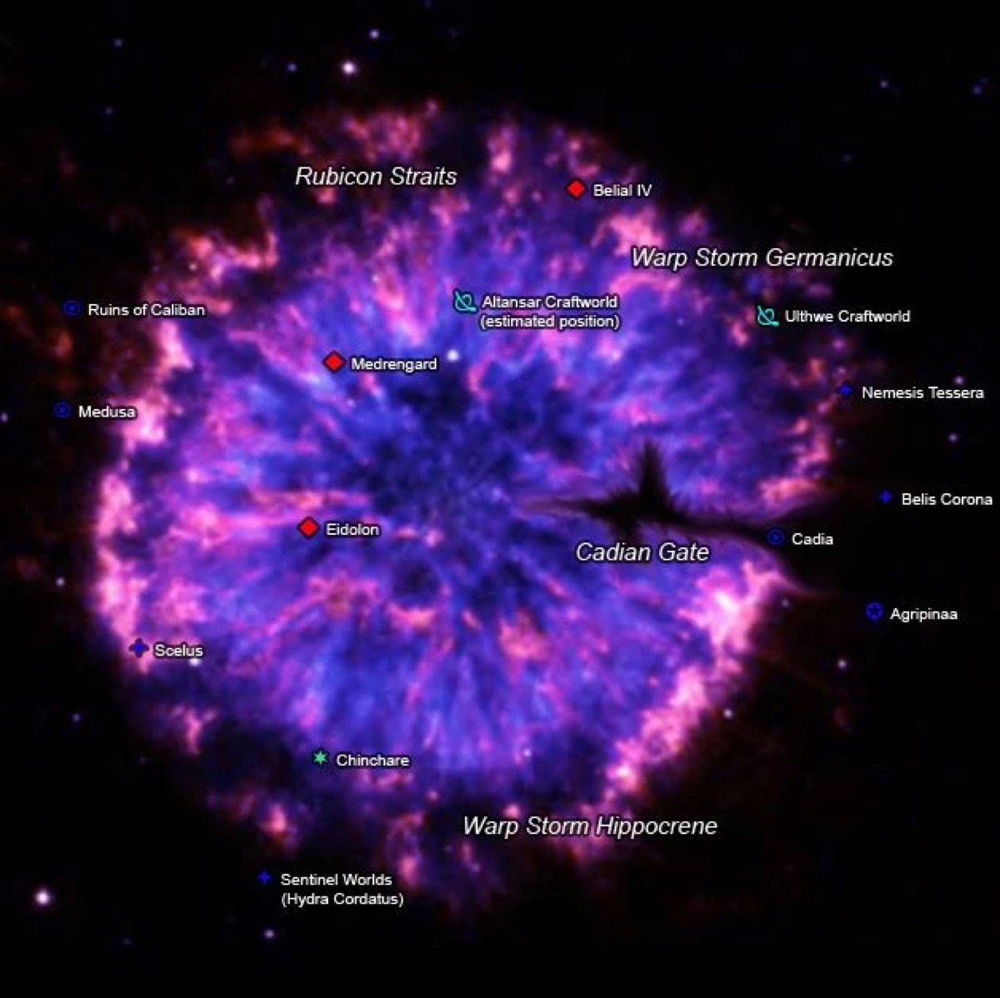

Eye of Terror
| Eye of Terror | |
|---|---|
| Permanent rift between the Warp and realspace | |
 Pict-capture of the Eye of Terror taken from beyond the Cadian Gate Artwork © Games Workshop | |
| Location | North-west galactic rim of the Segmentum Obscurus |
| Nature | A region of the realm of Chaos bleeding into realspace; the largest and oldest permanent warp storm known |
| Formed | The Fall of the Aeldari, c. M30 |
| Principal approach | The Cadian Gate, the only stable route; guarded by Cadia until 999.M41 |
| Imperial designation | Segmentum Obscurus, Eye of Terror Subsector (restricted) |
| Notable worlds | Cthonia, Medrengard, Sortiarius, Eidolon, the Plague Planet, Belial IV |
| Inhabitants | |
| Heretic Astartes of the Black Legion and the Traitor Legions; Daemon Primarchs; daemons and cultists; renegade Titan Legions; the Dark Mechanicum | |
| Associated conflicts | |
| Great Scouring, Black Crusades, Gothic War, Fall of Cadia | |
The Eye of Terror is a vast and permanent rift in the fabric of space, lying across the north-west edge of the Segmentum Obscurus, where the material universe and the Warp have merged. Its edge, visible across many light years, is a storm of colours that no instrument has been able to fix, and its interior is a region in which the laws of space, time and sense do not hold. It is the principal stronghold of the Traitor Legions, the haunt of daemon princes and the fountain from which the Black Crusades have been launched against the Imperium. The Ordo Malleus names it, in its internal documents, the Primary Wound and holds that every Imperial strategy for the destruction of Chaos must begin with it.[1]
The Eye is the oldest of the great warp storms known to the Imperium, but it did not begin in the Imperium's time. Imperial scholars, drawing on the records of the Ordo Xenos and the testimony of the Aeldari, date its opening to the birth of the Chaos power Slaanesh, the youngest of the four Ruinous Powers, which took place at the Fall of the Aeldari in the closing centuries of the thirtieth millennium. The Eye marks the place of that event and is, in the opinion of the Ordo Xenos, the scar of a wound that has never closed.[2]
The Imperium came to know the Eye in the aftermath of the Horus Heresy, when the Great Scouring drove the surviving Traitor Legions into it in the years following 014.M31. Since then it has been the refuge of the enemy and the object of ten thousand years of Imperial watchfulness. In 999.M41, the thirteenth Black Crusade ended in the fall of the fortress world of Cadia and the opening of the Great Rift, which has now overshadowed the Eye in the Imperium's counsels. The Eye remains, however, the heart of the Traitors' power.[3]
Nature
[edit]Description
[edit]From the outside, the Eye appears as a glowing storm with a core of darkness, a region some hundreds of light years across whose edge is a nebulous wall of purple, crimson and gold. Within the wall lie systems and planets that can be reached only by the best Navigators, and in many cases not at all. The Imperium has charted the fringes of the Eye in detail but has no reliable map of the interior. Those who have returned from it report that its geography alters between visits, that distances are not constant and that the stars themselves are sometimes absent and sometimes in places they did not hold before.[4]
The Eye is most unstable in its centre, where the border between the Warp and realspace is thinnest. The Navigators speak of a region in which the stars are replaced by a sea of light, where the ships' compasses spin and where the crew hear a kind of music. A voyage deep into the Eye has been described by the few who survived as a journey through the dreams of a god, and they report that the experience cannot be put into words. The Imperium has no safe way to enter the Eye, and the number of Navy ships lost in attempts to do so is held under seal.[1]

Effects on realspace
[edit]The Eye has direct effects on the worlds around it. Within a certain distance, the Warp's influence is so great that cultists may be found on any world, psykers are born in far greater numbers than the Imperial norm, and daemons may manifest with ease. The worlds on the rim are in a state of constant vigilance, and many have become fortresses. Astropathic communication in the region is subject to interference, and the Astronomican's light is dim. Cadia, where the pylons held the Eye in check for ten thousand years, was the keystone of this system.[3]
The Fall of the Aeldari
[edit]The Imperium knows the origin of the Eye through the Ordo Xenos and from the legends of the Aeldari, which the Inquisition has studied for ten thousand years. The accounts are in agreement on the main events, though they differ on the date and on the causes.[2]
The empire of the Aeldari
[edit]In the ages before mankind rose, the Aeldari were the galaxy's dominant species, a long-lived, psychically gifted race that had built a civilisation of vast cities, great fleets and an elaborate network of tunnels through the Warp, called the Webway. According to their own records they had been created by a more ancient race, the Old Ones, and had survived the war in which that race fell. Their empire stretched across a large part of the galaxy, and they were masters of its worlds. Without enemies and without want, they turned their great intelligence to the pursuit of pleasure.[2]
Their culture was one of art and of experience. The Aeldari built cities devoted to the stage, the arena and the pleasure-house, and they sought ever more intense sensations. The early part of this age was a golden era of art and philosophy, but the pursuit of sensation carried them to extremes. Aeldari seers of the time warned that their emotions were accumulating in the Warp, and that the Warp would answer them. The warnings were ignored. The Imperium's own records suggest that the Aeldari discovered in their last centuries that they could not stop.[2]
The birth of Slaanesh
[edit]The Aeldari's collective excess, in the Imperial reading of their legends, gave rise to a new entity in the Warp. It was born at the moment of their civilisation's greatest decadence, and its first act was a cry that shattered the Aeldari's psychic network and destroyed the greater part of the species. Its second was to devour the souls of the dying. The entity that emerged is the one the Imperium calls Slaanesh, and that the Aeldari call She Who Thirsts. The event, called by the Aeldari the Fall and by the Imperium the Birth of the Dark Prince, left the Aeldari empire in ruins and ended the first age of the galaxy.[1]
The birth was accompanied by a catastrophe in the material universe. The place where the event occurred, which had been the centre of the Aeldari empire, was torn open, and the Warp poured into realspace. The rift was the Eye of Terror. The wound has not closed in the following ages, and the Imperium, which came to the region only when the Eye had already been open for more than ten thousand years, found a sector of space that was the heart of a vanished power and a gateway to the realm of the Powers.[2]
The remnants
[edit]The Aeldari who survived the Fall did so in three ways. Some escaped by means of the Webway, and in time became the dark kin of the Webway city Commorragh, who preserve their lives by feeding on the suffering of others. Some, led by the farsighted, built great vessels called craftworlds, in which a remnant of the people could drift outside Slaanesh's reach. A few fled to outlying worlds and have lived there in the manner of the old days. The craftworld Ulthwé sits closest to the Eye, and its seers have kept watch on it since the Fall.[2]
The Aeldari account of the Fall has not been confirmed by independent evidence. The Mechanicus and the Inquisition regard it with caution, and some scholars argue that the Aeldari were not the sole cause of the event, nor the only species affected. The date also varies between sources: the Imperium's reckoning places the Fall in the thirtieth millennium, while some Aeldari sources describe a much longer interval. The Ordo Malleus is content to treat the matter as a historical question of no operational importance and to concentrate on the present state of the rift.[1]
History
[edit]The Great Scouring
[edit]The Eye entered Imperial history after the Horus Heresy. When the Warmaster fell at the Siege of Terra, the traitor Legions fled the Sol System and scattered through the galaxy. The loyalist Legions, under the command of the primarch Roboute Guilliman, pursued them in the campaign known as the Great Scouring, and drove them one by one from the worlds they had taken. The survivors retreated to the Eye of Terror, where the pursuit could not follow. The Imperium learned of the region only when its fleets lost sight of the enemy at the edge of the storm, and it was the Navigators who first understood that the traitors had passed into the Warp without leaving the material universe.[5]
The Traitors in the Eye
[edit]Within the Eye, the Traitor Legions did not remain a single army. Each took possession of a world or a group of worlds, and in many cases, of the daemonic domains that overlap with them. The Iron Warriors established themselves on Medrengard, a fortress world raised from a desolate planet. The Thousand Sons occupied Sortiarius, the Planet of the Sorcerers, where their primarch Magnus held court in the Tower of the Cyclops. The Sons of Horus, who had become the Black Legion, held Cthonia, their original home and the world where the Warmaster was raised. The Death Guard ruled a plague-wracked world under Mortarion, and the Emperor's Children splintered into pleasure-cults, while their primarch Fulgrim withdrew to the daemon world of Callax. The World Eaters made the Blood God's war their own. Each of these domains is the seat of a Legion, a warband and a cult.[6]
The Eye has a strange effect on the worlds within it. Planets are said to grow in size or to be consumed by daemonic energy, and the people who live there have mutated over ten thousand years into forms that bear little resemblance to man. The Legions themselves have changed. The surviving Heretic Astartes are not the warriors of the Great Crusade, but creatures bound by their patron Powers, and the gene-seed that created them has been corrupted by the Warp. Estimates of the numbers within the Eye vary, but the Inquisition believes that the Legions field armies of hundreds of thousands of Heretic Astartes and tens of millions of mortal followers.[3]

The Black Crusades
[edit]For ten thousand years the Traitors of the Eye have attacked the Imperium in a series of invasions called the Black Crusades. The Imperium counts thirteen, all of them led by the Despoiler Ezekyle Abaddon, Warmaster of Chaos. Each crusade has emerged through the Cadian Gate, the one stable route between the Eye and the Imperium, and each has been met at the Gate by Imperial forces, at heavy cost. The fortress world of Cadia and its pylons, which suppressed the Warp's effects in the region, were the Imperium's chief defence. The twelfth crusade, the Gothic War, was fought in 139–160.M41 in the Gothic Sector. The thirteenth is described below.[3]
The Fall of Cadia and the Great Rift
[edit]In 999.M41, Abaddon launched the thirteenth Black Crusade at the head of a host larger than any since the Heresy. He broke the Cadian Gate with the aid of the Powers and of a daemonic flotilla, and Cadia was destroyed after a siege that is the subject of its own entry (see Fall of Cadia). The destruction of the pylons and the death of the planet tore open the barrier that had held the Eye in check, and the Great Rift, a wound across the galaxy, opened in its place. The Eye of Terror, once the principal source of Chaos in the galaxy, is now only one of its many centres.[7]
Since the Rift opened, the Eye's borders have become unstable. Ships report that the Cadian Gate is no longer a gate but a region of broken worlds around a shattered planet, and Imperial Navy squadrons that once patrolled the edge of the Eye have been withdrawn. The Traitors are free to leave the Eye in numbers, and the Imperium can no longer rely on a single choke-point to contain them. The Imperial war-council has designated the Cadian region a war zone and has sent the Indomitus Crusade's fleets to contest it.[7]
Features
[edit]Daemon worlds
[edit]The principal planets of the Eye are daemon worlds, planets in which the barrier between the Warp and the material universe has been broken, and in which daemons walk freely. They are fortresses of Chaos, each ruled by a warlord or a Daemon Prince. The best known include Medrengard, held by the Iron Warriors, Sortiarius, held by the Thousand Sons, Cthonia, held by the Black Legion, and the Plague Planet of the Death Guard. Each is a world in the grip of a patron Power, and each is a place where the laws of realspace do not entirely hold. The Imperium has charted some of them from a distance and has never succeeded in capturing one.[4]
Fortress worlds and refuges
[edit]The Imperium's own presence on the fringes of the Eye includes a series of fortress worlds, shrine worlds and listening stations. The most important was Cadia, and its role was taken in part by Kasr Kin and the worlds of the Gate. A number of other systems, among them Belis Corona and Agripinaa, have stood on the line of the Imperial defences and have suffered accordingly. The worlds of the Imperium on the edge of the Eye have a distinctive culture: severe, watchful and militarised. Their soldiers have long served the Astra Militarum as some of its best.[3]
Warp storms of the Eye
[edit]Two great storms lie at the edge of the Eye. The storms called Germanicus and Hippocrene have been charted by the Navy for ten thousand years. They are held to be spillovers from the Eye, and the regions they cover are among the most dangerous in the Imperium. Voyages through them have been attempted, and some have succeeded, but only by Navigators of exceptional skill.[4]
Imperial response
[edit]The Imperium's principal response to the Eye has been containment. The Cadian Gate was held for ten thousand years by a combination of fortress worlds, Navy squadrons and Space Marine Chapters. The Inquisition maintains agents in the region, and the Ordo Malleus keeps a standing force of Grey Knights in readiness. It has never been possible to destroy the Eye: no weapon has been devised that could close a wound of that size, and the Imperium has no means of reaching the daemon worlds within. The Ordo Malleus has proposed several plans for its closure, among them the use of the Emperor's own power, but all have been judged too dangerous.[1]
The Aeldari of Ulthwé have kept watch on the Eye for ten thousand years and have at times co-operated with the Imperium's forces, a fact that the Ordo Xenos regards with some discomfort. Their seers foresaw the thirteenth Black Crusade and warned the Imperium by indirect means. Whether the warning was sincere is a matter of dispute.[2]
Timeline
[edit]| Date | Event |
|---|---|
| Age of Strife | The Warp storm that becomes the Eye of Terror forms over the galactic north-east, cutting off the worlds beyond it.[a] |
| 781.M31 | The First Black Crusade is launched from the Eye of Terror against Cadia, and the Cadian Gate is established as the Imperium's barrier. |
| 004.M31 | The Thousand Sons are carried into the Eye of Terror by Tzeentch after the Burning of Prospero. |
| 014–021.M31 | The Great Scouring drives the Traitor Legions into the Eye of Terror. |
| M31 | The Legion Wars are fought among the Traitor Legions within the Eye of Terror. |
| 321.M37 | The Abyssal Crusade sends thirty Chapters into the Eye of Terror. |
| M38 onward | Chaos Warbands raid the Imperial systems of the Cadian Gate in successive Black Crusades.[b] |
| 999.M41 | The Thirteenth Black Crusade and the Fall of Cadia: the Cadian Pylons fail, and the Eye of Terror expands across the galaxy. |
| 999.M41 | The Great Rift opens and the Eye of Terror is joined to the rest of the galaxy by the Cicatrix Maledictum. |
| Early M42 | Abaddon's warbands hold the Eye of Terror and the Imperium fights to contain the Great Rift from its edge. |
See also
[edit]
Notes
[edit]References
[edit]- ^ a b c d e Bayley, Barrington J.. Eye of Terror (novel). Black Library, Chs 1-19. Codex Adeptus Astartes - Space Marines (8th Edition), pp. 18-19. Games Workshop.
- ^ a b c d e f g Warhammer 40,000: Rulebook (8th Edition), pp. 50-53. Games Workshop. Dembski-Bowden, Aaron. The First Heretic (novel). Black Library.
- ^ a b c d e McNeill, Graham. Angel Exterminatus (novel). Black Library. Reynolds, Josh. Fabius Bile: Primogenitor (novel). Black Library.
- ^ a b c Counter, Ben. Hammer of Daemons (novel). Black Library. Codex: Chaos Space Marines (6th Edition), pp. 5, 8, 11-15, 17, 20, 22-25, 32, 57, 63. Games Workshop.
- ^ Warhammer 40,000: Rulebook (6th Edition), pp. 161, 168, 170, 186, 218, 222, 225, 228, 385. Games Workshop. Codex: Chaos Daemons (4th Edition), pg. 18. Games Workshop.
- ^ Codex: Chaos Space Marines (4th Edition), pp. 15, 17, 23-24. Games Workshop. Codex: Chaos Space Marines (3rd Edition, Revised Codex), pg. 8. Games Workshop.
- ^ a b Codex: Chaos Space Marines (3rd Edition, 1st Codex), pp. 5-8, 44, 53. Games Workshop. Codex: Eye of Terror (3rd Edition), pp. 4-5, 8-9, 11-14, 24-25. Games Workshop.
Further reading
[edit]- Liber Daemonica (rev. M38). Ordo Malleus. The principal Inquisitorial study of the Eye. Restricted.
- Xenological Digest of the Ordo Xenos (rev. M40). The Aeldari accounts of the Fall.
- Annals of the Great Scouring (c. 020.M31). The pursuit of the Traitors into the Eye.